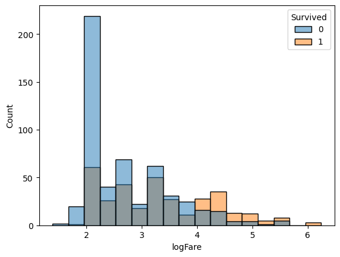

! pip install -U kaggle seaborn pandas --quietTitanic Dataset prediction
Setup
import kaggle
import pandas as pd
from sklearn.model_selection import train_test_split
from sklearn.metrics import accuracy_score, confusion_matrix, f1_score, precision_score, recall_score, log_loss
import seaborn as sns
import matplotlib.pyplot as plt
from fastai.imports import *
np.set_printoptions(linewidth=130)path = Path("/tmp/")
kaggle.api.competition_download_files("titanic", force=True, path=path)
files = ["train.csv", "test.csv", "gender_submission.csv"]
! rm {" ".join(str(path / f) for f in files)}
! unzip {path / "titanic.zip"} -d {path}Archive: /tmp/titanic.zip
inflating: /tmp/gender_submission.csv
inflating: /tmp/test.csv
inflating: /tmp/train.csv train = pd.read_csv(path / "train.csv")
train.head(2)| PassengerId | Survived | Pclass | Name | Sex | Age | SibSp | Parch | Ticket | Fare | Cabin | Embarked | |
|---|---|---|---|---|---|---|---|---|---|---|---|---|
| 0 | 1 | 0 | 3 | Braund, Mr. Owen Harris | male | 22.0 | 1 | 0 | A/5 21171 | 7.2500 | NaN | S |
| 1 | 2 | 1 | 1 | Cumings, Mrs. John Bradley (Florence Briggs Thayer) | female | 38.0 | 1 | 0 | PC 17599 | 71.2833 | C85 | C |
test = pd.read_csv(path / "test.csv")
test.head(2)| PassengerId | Pclass | Name | Sex | Age | SibSp | Parch | Ticket | Fare | Cabin | Embarked | |
|---|---|---|---|---|---|---|---|---|---|---|---|
| 0 | 892 | 3 | Kelly, Mr. James | male | 34.5 | 0 | 0 | 330911 | 7.8292 | NaN | Q |
| 1 | 893 | 3 | Wilkes, Mrs. James (Ellen Needs) | female | 47.0 | 1 | 0 | 363272 | 7.0000 | NaN | S |
sample_submission = pd.read_csv(path / "gender_submission.csv")
sample_submission.head(2)| PassengerId | Survived | |
|---|---|---|
| 0 | 892 | 0 |
| 1 | 893 | 1 |
EDA
train.describe()| PassengerId | Survived | Pclass | Age | SibSp | Parch | Fare | |
|---|---|---|---|---|---|---|---|
| count | 891.000000 | 891.000000 | 891.000000 | 714.000000 | 891.000000 | 891.000000 | 891.000000 |
| mean | 446.000000 | 0.383838 | 2.308642 | 29.699118 | 0.523008 | 0.381594 | 32.204208 |
| std | 257.353842 | 0.486592 | 0.836071 | 14.526497 | 1.102743 | 0.806057 | 49.693429 |
| min | 1.000000 | 0.000000 | 1.000000 | 0.420000 | 0.000000 | 0.000000 | 0.000000 |
| 25% | 223.500000 | 0.000000 | 2.000000 | 20.125000 | 0.000000 | 0.000000 | 7.910400 |
| 50% | 446.000000 | 0.000000 | 3.000000 | 28.000000 | 0.000000 | 0.000000 | 14.454200 |
| 75% | 668.500000 | 1.000000 | 3.000000 | 38.000000 | 1.000000 | 0.000000 | 31.000000 |
| max | 891.000000 | 1.000000 | 3.000000 | 80.000000 | 8.000000 | 6.000000 | 512.329200 |
train.describe(include='object')| Name | Sex | Ticket | Cabin | Embarked | |
|---|---|---|---|---|---|
| count | 891 | 891 | 891 | 204 | 889 |
| unique | 891 | 2 | 681 | 147 | 3 |
| top | Braund, Mr. Owen Harris | male | 347082 | B96 B98 | S |
| freq | 1 | 577 | 7 | 4 | 644 |
sns.countplot(train, x="Sex", hue="Survived")
plt.title("Gender vs Survived")Text(0.5, 1.0, 'Gender vs Survived')train['logFare'] = train['Fare'].apply(np.log)sns.histplot(train, x="logFare", hue="Survived")
sns.histplot(train, x="Age", hue="Survived")sns.countplot(train, x="Embarked", hue="Survived")sns.histplot(train, x="SibSp", hue="Survived")sns.histplot(train, x="Parch", hue="Survived")Evals and metrics
train, valid = train_test_split(train, test_size=0.2)def evaluate(y_targets, y_preds, thresh=0.5):
# y_targets: classes 0/1
# y_preds: probs of being 1 (scores)
y_pred_labels = [1 if s>=thresh else 0 for s in y_preds]
accuracy = accuracy_score(y_targets, y_pred_labels)
f1 = f1_score(y_targets, y_pred_labels)
loss = log_loss(y_targets, y_preds)
return accuracy, f1, lossRandom Model
random_model_accuracy, random_model_f1, random_model_loss = evaluate(valid["Survived"].values, np.random.random_sample(len(valid)))
print(f"{random_model_accuracy=} {random_model_f1=} {random_model_loss=}")random_model_accuracy=0.5363128491620112 random_model_f1=0.4779874213836478 random_model_loss=0.8794932767664191Feature Engg
def feat_engg_pipeline(df, fillna=True):
x = deepcopy(df)
x = pd.concat([x, pd.get_dummies(x["Pclass"], prefix="plcass", dummy_na=True, drop_first=True)], axis=1)
x = pd.concat([x, pd.get_dummies(x["Embarked"], prefix="embarked", dummy_na=True, drop_first=True)], axis=1)
x = pd.concat([x, pd.get_dummies(x["Sex"], prefix="sex", dummy_na=True, drop_first=True)], axis=1)
x["logFare"] = x["Fare"].apply(lambda x: max(np.log(x), 0.0001))
x["SibSp"] = x["SibSp"].apply(lambda x: x if x<2 else 2)
x["Parch"] = x["Parch"].apply(lambda x: x if x<2 else 2)
x["age_isnan"] = x["Age"].apply(lambda x: x!=x)
x["Age"] /= 100
x = x.fillna(0)
x = x.drop(["Pclass", "Fare", "Name", "Embarked", "Ticket", "Cabin", "Sex", "PassengerId", "Survived"], axis=1)
return xLogistic Model
from sklearn.linear_model import LogisticRegressionX = feat_engg_pipeline(train).to_numpy(float)
y = train["Survived"].values/var/folders/64/2d7m3w55173_15ss4212phx00000gn/T/ipykernel_79547/3317546291.py:6: RuntimeWarning: divide by zero encountered in log
x["logFare"] = x["Fare"].apply(lambda x: max(np.log(x), 0.0001))model = LogisticRegression()
model.fit(X, y)LogisticRegression()In a Jupyter environment, please rerun this cell to show the HTML representation or trust the notebook.
On GitHub, the HTML representation is unable to render, please try loading this page with nbviewer.org.
LogisticRegression()
X_val, y_val = feat_engg_pipeline(valid).to_numpy(float), valid["Survived"].values/var/folders/64/2d7m3w55173_15ss4212phx00000gn/T/ipykernel_79547/3317546291.py:6: RuntimeWarning: divide by zero encountered in log
x["logFare"] = x["Fare"].apply(lambda x: max(np.log(x), 0.0001))y_preds = model.predict_proba(X_val)[:, 1]evaluate(y_val, y_preds)(0.8268156424581006, 0.7832167832167832, 0.4435807485988586)